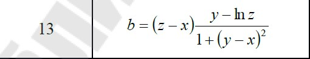

<!DOCTYPE html>
<html lang="en">
<head>
  <meta charset="UTF-8">
  <title>Пшеничник Валентин ЗИС-20</title>
</head>
<body>
<script>
    let z = +prompt("Введите Z")
    let x = +prompt("Введите X")
    let y = +prompt("Введите Y")
    let b = (z - x) * (y - Math.log(z)) / (1 + Math.pow(y - x, 2));
    document.write(`<p>В соответствии с вариантом неоходимо написать скрипт для вычисления значения переменной b. Исходные данные вводятся с использованием метода propmt. При выводе информации предусмотреть форматирование документа, вывод текста задания, включая рисунок исходного выражения, и вывод информации о разработчике скрипта</p>`);
    document.write(``);
    document.write(`<p>B = ${isNaN(b) ? "Введены неверные данные" : b}</p>`);
    document.write("<p>Выполнил Пшеничник В.Н.</p>")
</script>
</body>
</html>